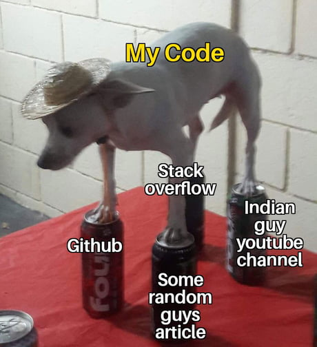
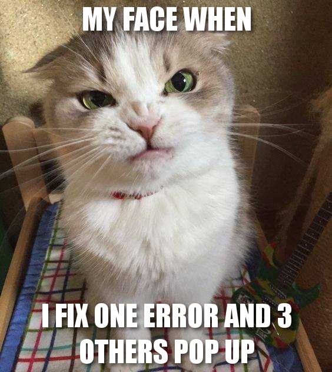
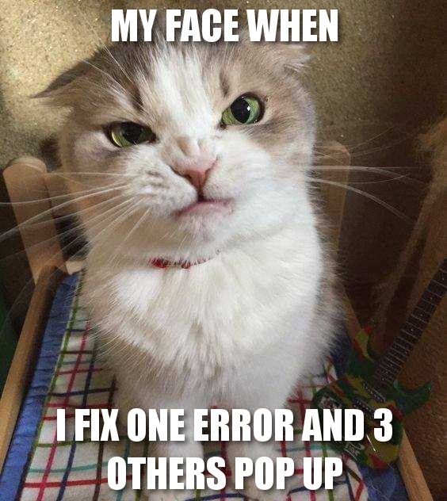

Фотография лежит в той же папке


Фотография лежит выше folder.html на уровне folder1



Фотография лежит еще выше на уровне dir1


Фотография лежит еще выше в корневой папке itgirlschool
 



Вернуться назад
Вывод
Для внутренних ссылок лучше использовать относительные адреса.
Для внешних ссылок и рассылок с сайта лучше использовать абсолютные
ссылки .